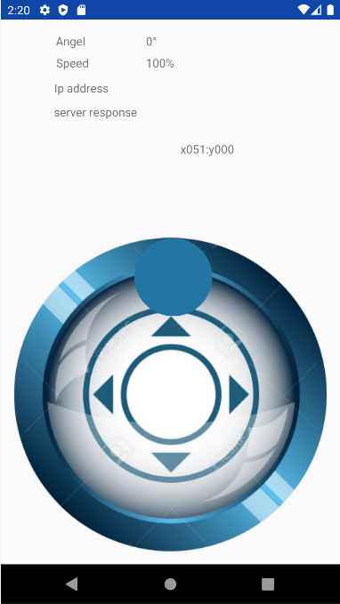
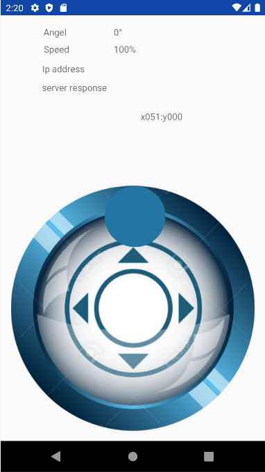

Hello World!
I am Kumarapatabendige Chaneli Anupama Silva but you can call me Chaneli. I’m currently studying at University of Gothenburg for my bachelor’s studies ‘Software Engineering and Management’. I’m quite passionate about small things that make a huge difference and it is one of the reasons I have chosen this field.


 
